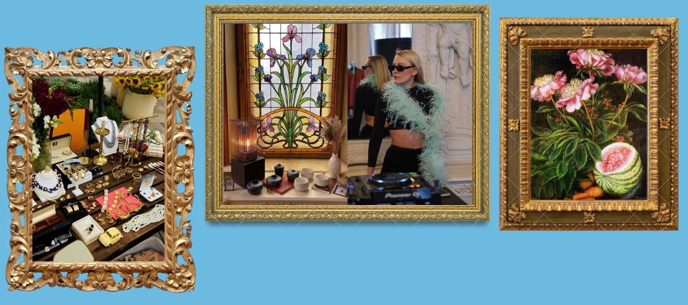
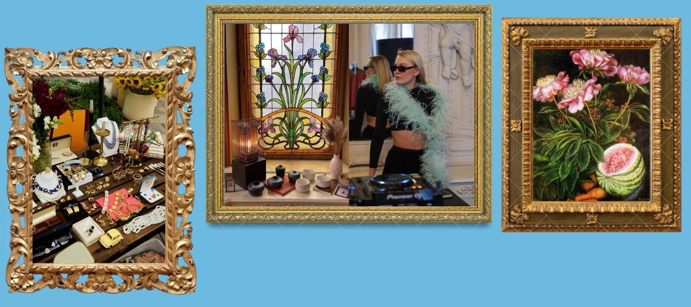

ART, FESTIVALS & EVENTS
Kyiv is the city of creative people. You will never get bored here, because there's something going on almost every day. Kyiv people love to visit an interesting art gallery, fancy street festival or a fun party. Some of the most popular festivals are: Kurazh Bazar, Vsi svoi (clothes and food flea-market), Kyivness (luxyry vintage clothes market). We also have huge Olympic stadium (capacity: 100.000 people) for the best concerts and sport events.
To find out more click on the buttoms below
 
